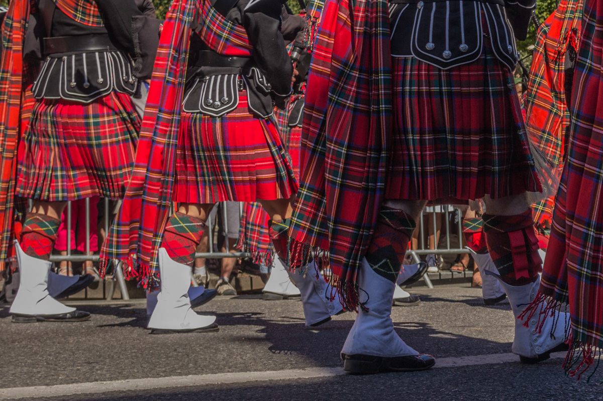

Culture Écossaise : Un Héritage Riche et Vivant
Terre de légendes et de paysages sauvages, l'Écosse possède une culture unique et vibrante, façonnée par des siècles d'histoire, de musique, de traditions et de fierté. Explorez un monde où les kilts dansent au son des cornemuses, où les contes de fées se mêlent à la réalité, et où l'hospitalité est une valeur sacrée.
Les Piliers de la Culture Écossaise
Le Kilt et les Tartans : Une Identité Tissée
Bien plus qu'un simple vêtement, le kilt est un symbole fort de l'identité écossaise, représentant la fierté clanique et l'héritage familial. Chaque tartan, avec ses motifs et couleurs spécifiques, est associé à un clan ou une région. Découvrez l'histoire fascinante derrière ces tissus emblématiques et apprenez à distinguer les différents tartans.
 En savoir plus sur les kilts et les tartansLa Cornemuse : L'Âme de l'Écosse
Le son envoûtant de la cornemuse, ou "pìob mhòr" en gaélique, résonne dans les vallées et montagnes écossaises depuis des siècles. Jadis un instrument de guerre, elle est aujourd'hui un symbole de célébration et de commémoration, jouée lors des mariages, funérailles, festivals et défilés. Laissez-vous emporter par sa mélodie puissante et émotive.
Découvrez l'histoire de la cornemuseMusique et Danse : Une Expression de Joie et de Tradition
La musique traditionnelle écossaise, avec ses ballades mélancoliques, ses jigs entraînants et ses reels rapides, est une source de fierté et de divertissement. La danse, qu'il s'agisse des danses de groupe dynamiques des ceilidhs ou des mouvements gracieux des danses des Highlands, est une façon festive de célébrer la culture écossaise.
Plongez dans l'univers de la musique et de la danse écossaiseLe Gaélique : Une Langue Ancestrale
Bien que moins parlé aujourd'hui, le gaélique écossais est une langue celtique ancienne qui fait partie intégrante du patrimoine culturel du pays. Des efforts sont faits pour préserver et promouvoir son usage à travers l'éducation, les médias et les événements culturels. Découvrez la beauté et la richesse de cette langue unique.
 Apprenez-en plus sur le gaélique écossais
Apprenez-en plus sur le gaélique écossais
Festivals et Événements : Célébrer l'Écosse
Tout au long de l'année, l'Écosse s'anime de festivals et d'événements mettant en valeur sa culture et ses traditions. Des Highland Games, qui mettent à l'épreuve la force et l'adresse, aux festivals de musique celtique et aux célébrations de la Burns Night, il y a toujours une occasion de découvrir la joie de vivre écossaise.
Explorez le calendrier des événementsMystères et Légendes : Un Monde de Magie
L'Écosse est riche en mythes et légendes transmis de génération en génération. Des créatures mythiques comme le monstre du Loch Ness aux récits de fées et de héros courageux, ces histoires captivantes font partie intégrante de l'imaginaire écossais. Laissez-vous envoûter par ces récits fascinants.
Découvrez les mythes et légendes écossaisLa culture écossaise est un mélange fascinant de traditions anciennes et d'influences modernes. Nous vous invitons à explorer plus en profondeur cet héritage riche et à découvrir les nombreuses facettes de l'âme écossaise. Que votre voyage en Écosse soit réel ou virtuel, nous espérons que vous serez inspiré par sa beauté et son unicité.